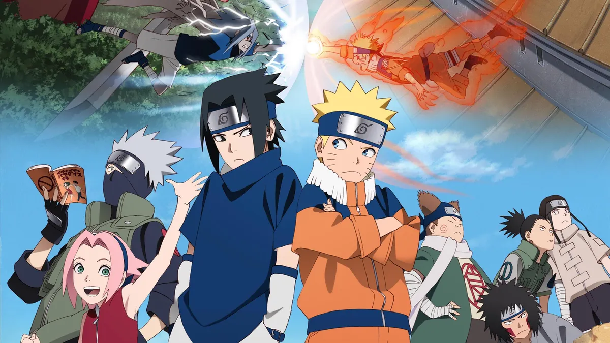

"Naruto" is a popular Japanese manga and anime series created by Masashi Kishimoto. It tells the story of Naruto Uzumaki, a young ninja from the fictional village of Konohagakure. The series follows Naruto's journey as he strives to become the strongest ninja in his village, with the ultimate goal of becoming the Hokage, the leader of the village.
Naruto is initially an outcast in his community because he carries within him the Nine-Tailed Fox, a powerful and malevolent creature that attacked the village years ago. Throughout the series, Naruto faces numerous challenges, overcomes personal obstacles, and forms meaningful friendships. He trains under various mentors, including Kakashi Hatake, Jiraiya, and Might Guy, to develop his ninja skills.
As the story progresses, Naruto becomes part of Team 7, which consists of Sakura Haruno, Sasuke Uchiha, and their mentor Kakashi. Together, they go on missions and encounter different enemy ninja clans, such as the rival Uchiha clan and the organization known as Akatsuki. Sasuke's journey also plays a central role as he seeks power and vengeance, leading to a complex dynamic between him and Naruto.
The series explores themes of friendship, perseverance, and the pursuit of one's dreams. Naruto gradually earns the respect of his peers and gains a loyal group of friends, including Sakura, Sasuke, and others from different villages. He learns powerful techniques, such as the Rasengan and the ability to tap into the Nine-Tails' chakra.
As the story progresses, Naruto uncovers the truth about his lineage and the circumstances surrounding the Nine-Tailed Fox's attack. He confronts powerful adversaries and participates in large-scale battles, culminating in an epic conflict known as the Fourth Great Ninja War.
Overall, "Naruto" is a tale of personal growth, friendship, and the determination to overcome adversity. The series spans across various arcs, exploring the lives and aspirations of its characters while showcasing intense ninja battles and a richly developed world of shinobi.
